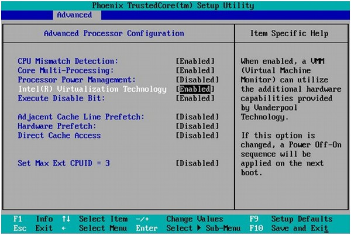

VİRTUALBOX 64 BİT SORUNU
Bilgayar 64 bit olmasına rağmen sanal makine kurulumu esnasında sadece 32 bit seçimi çıkıyorsa aşağıdaki adımlar yapılmalıdır.
- İşletim sisteminiz 64 bit olmalıdır.
- BIOS içerisinde Intel Virtualization Technology enabled yapılmalıdır.
- Windows özelliklerinde Hyper-V platform aktif ise kaldırılarak devre dışı bırakılmalıdır.

Geri dön...